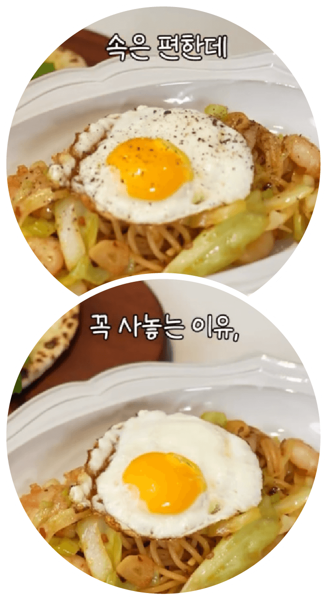
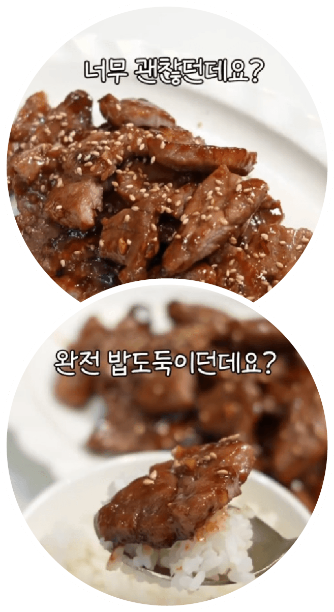
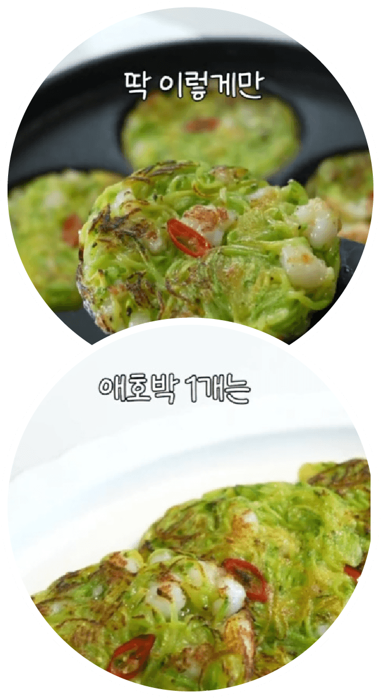

음식에 진심인 식품 연구원이자 10년 차 자취생. 전문적인 식품 지식을 바탕으로 간단하면서도 맛있는 레시피를 연구하며, 바쁜 일상에서도 건강한 한 끼를 챙길 방법을 고민해 왔다. 식품 연구원으로서 전문성과 10년간의 자취 경험이 만나, 누구나 쉽게 뚝딱 만들 수 있는 실용적인 요리를 선보인다. 복잡한 과정 없이 냉장고 속 간단한 재료로 만드는 그녀의 레시피는 자취생들의 현실적인 고민을 누구보다 잘 알기에 시간도 아끼고 재료도 아끼면서 영양까지 챙길 수 있다.
인스타그램
@heewon_home
유튜브
희원홈
잘 먹고 잘 사는 간단 요리 레시피

재료
(8개 분량)
새우 5마리, 채 썬 양배추 2줌, 마늘 5알, 페페론치노 2~4개, 대파 흰 부분 반대, 삶은 파스타 1인분, 올리브유 3큰술, 굴 소스 1큰술, 참치액 1큰술, 달걀 후라이 1개
- ① 팬에 올리브유를 두르고, 편을 썬 마늘과 페페론치노를 볶는다.
- ② 대파를 송송 썰어 넣어주고, 해동한 새우와 양배추, 굴 소스, 참치액을 넣고 볶는다.
- ③ 삶은 파스타와 면수를 넣고 잘 비벼준다.
- ➃ 소금과 후추로 간을 하고 그릇에 담아내고, 달걀 후라이 반숙으로 토핑을 올린다.

재료
목살 400g, 다진 마늘 1큰술, 참소스 적당량, 통깨 약간
- ① 목살은 앞뒤로 칼집을 낸다.
- ② 지퍼백 안에 목살과 다진 마늘을 넣고, 참소스를 목살이 잠길 때까지 부어준다.
- ③ 한 시간 이상 재워주고, 팬에 고기와 소스를 살짝 부어 앞뒤로 노릇하게 굽는다.
- ④ 한입 크기로 자르고, 취향껏 깨를 올린다.

재료
애호박 1개, 새우 10마리, 청양고추 1개, 부침가루 1큰술, 전분 2큰술, 소금 1작은술, 후추 약간, 식용유 적당량
- ① 애호박 1개를 얇게 채 썰고, 소금 1작은술에 10분간 절여준다.
- ② 새우 10마리는 살짝 다지고, 절인 애호박, 채 썬 청양고추, 부침가루, 전분을 넣어 섞는다.
- ③ 팬에 식용유를 두르고 반죽을 올려 노릇하게 앞뒤로 구워 완성한다.